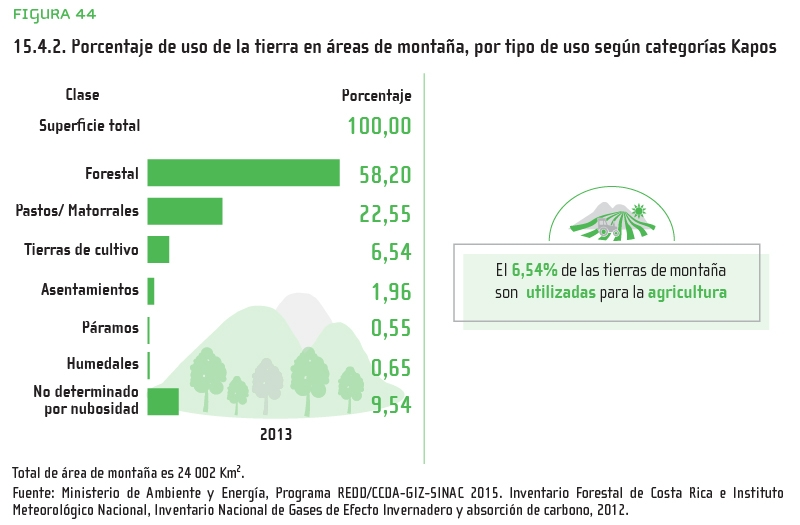

VIDA DE ECOSISTEMAS TERRESTRES
OBJETIVO 15: Gestionar sosteniblemente los bosques, luchar contra la desertificación, detener e invertir la degradación de las tierras, detener la pérdida de biodiversidad.
El Objetivo 15 pretende conservar la vida de ecosistemas terrestres. Busca proteger y restablecer los ecosistemas terrestres, gestionar sosteniblemente los bosques, luchar contra la desertificación, detener e invertir la degradación de las tierras, y detener la pérdida de biodiversidad. Los ecosistemas terrestres son vitales para el sostenimiento de la vida humana, contribuyen a más de la mitad del PIB mundial e incluyen diversos valores culturales, espirituales y económicos.
Sin embargo, el mundo se enfrenta a una triple crisis del cambio climático, a la
contaminación y a
la pérdida de la biodiversidad.
Más de 100 millones de hectáreas de tierras sanas y productivas se degradaron anualmente entre 2015
y 2019, lo que afectó a la vida de 1300 millones de personas.
La expansión agrícola es el motor directo de casi el 90 % de la deforestación mundial. Esta cifra
guarda relación directa con nuestros sistemas alimentarios, pues la cosecha de palma de aceite
representó por sí sola el 7 % de la deforestación mundial entre los años 2000 y 2018.
Los esfuerzos mundiales y regionales para mantener los ecosistemas forestales, así como sus
funciones sociales, económicas y medioambientales, son esenciales especialmente para los países en
desarrollo y los trópicos.
¿Por qué debería importarnos?
Los bosques cubren casi el 31 % de la superficie de nuestro planeta y albergan más del
80 % de todas
las especies terrestres de animales, plantas e insectos. Sin embargo, el deterioro de la
biodiversidad se está produciendo a un ritmo más rápido ahora que en cualquier otro momento de la
historia de la humanidad.
A escala mundial, una quinta parte de la superficie terrestre del planeta está degradada, un área
casi del tamaño de la India y Rusia juntas. La degradación de los suelos empuja a las especies a la
extinción e intensifica los efectos del cambio climático.
La biodiversidad y los servicios de los ecosistemas que respalda también pueden sentar las bases de
las estrategias de adaptación al cambio climático y reducción del riesgo de desastres, ya que pueden
generar beneficios que aumenten la resiliencia de las personas.
¿Qué supone la pérdida de los bosques?
La pérdida de los bosques implica la desaparición de los medios de subsistencia de las
comunidades
rurales, el aumento de las emisiones de carbono, el deterioro de la biodiversidad y la degradación
del suelo. Aunque el ritmo de pérdida neta de bosques sigue siendo elevado, los datos de 2020
muestran que la proporción de bosques en áreas protegidas y bajo planes de gestión a largo plazo
aumentó o se mantuvo estable a nivel mundial y en la mayoría de las regiones del mundo.
Un efecto irreversible de la actividad humana sobre el medio ambiente es la extinción de especies,
lo que altera el equilibrio de la naturaleza y hace que los ecosistemas sean más frágiles y ofrezcan
menos resistencia a las perturbaciones. Según un reciente informe de la ONU sobre biodiversidad,
cerca de un millón de especies animales y vegetales están en peligro de extinción, en muchos casos
en las próximas décadas, más que en cualquier otro momento en la historia de la humanidad.